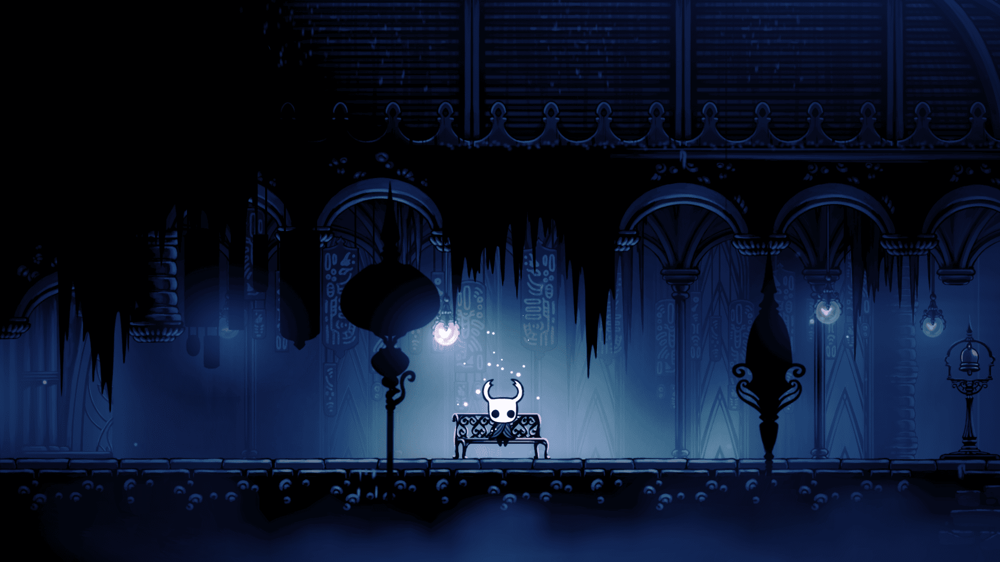
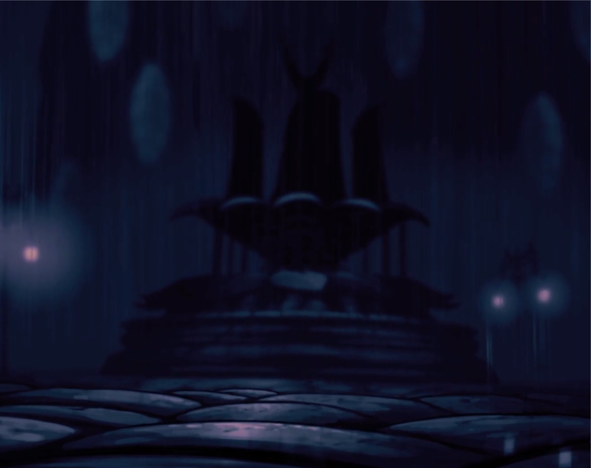
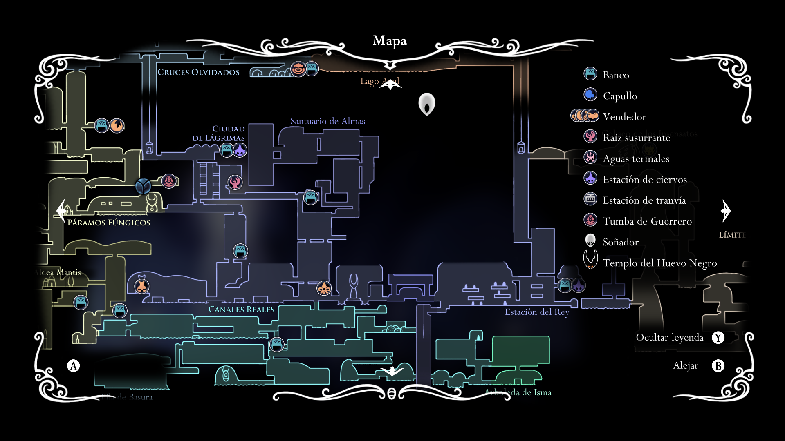
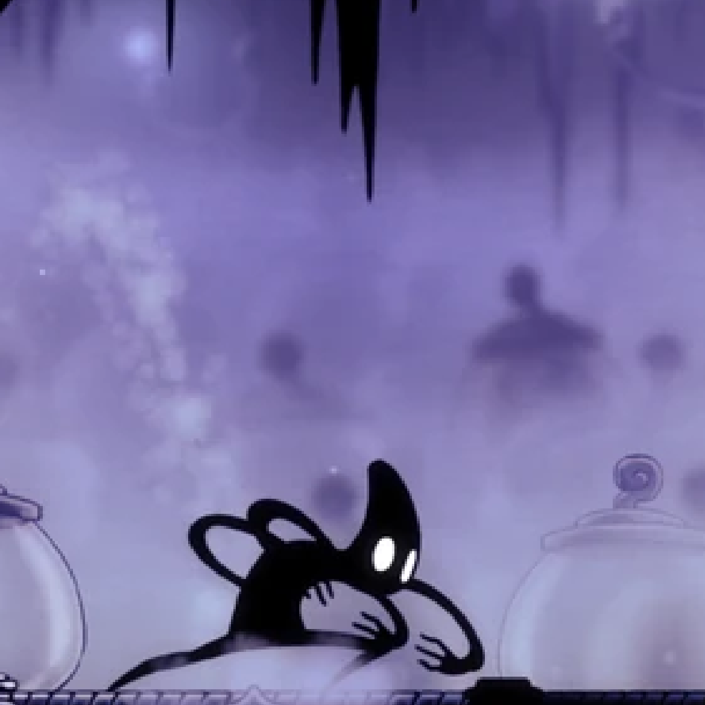
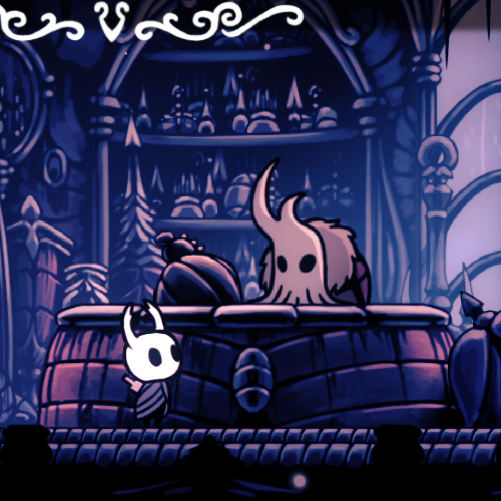
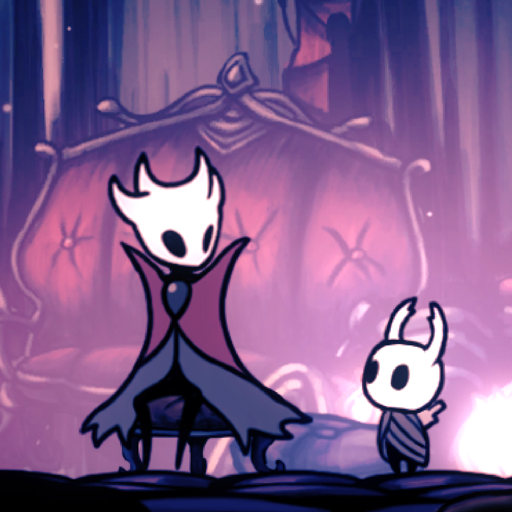
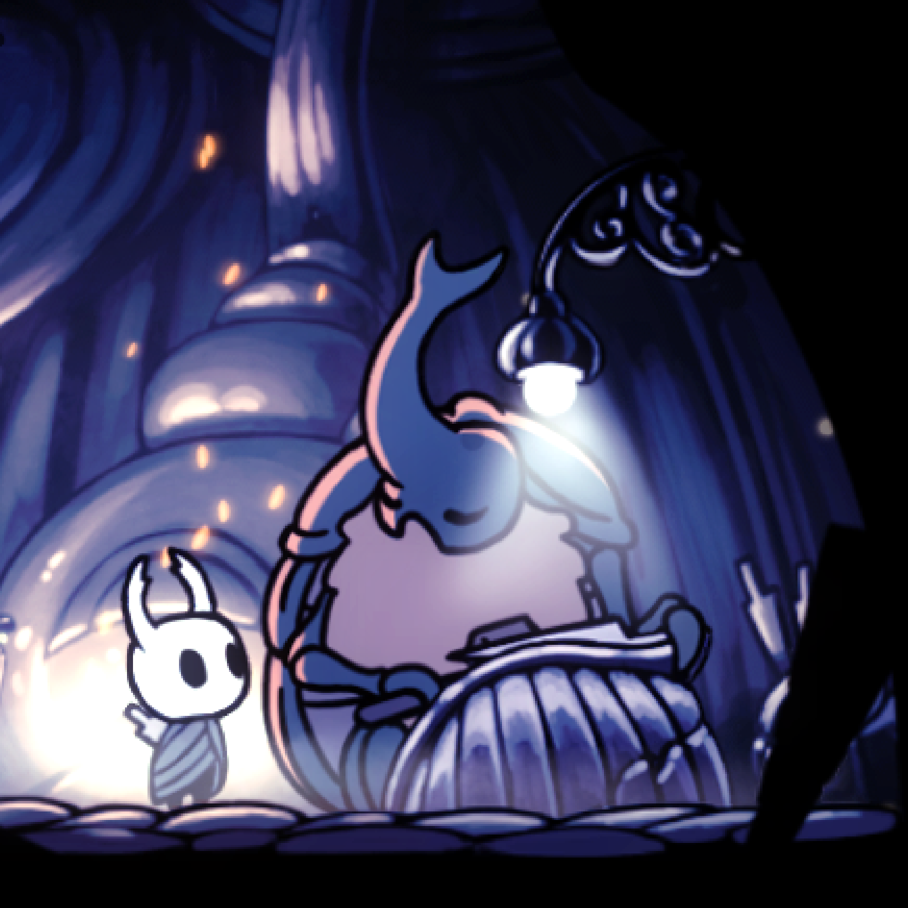
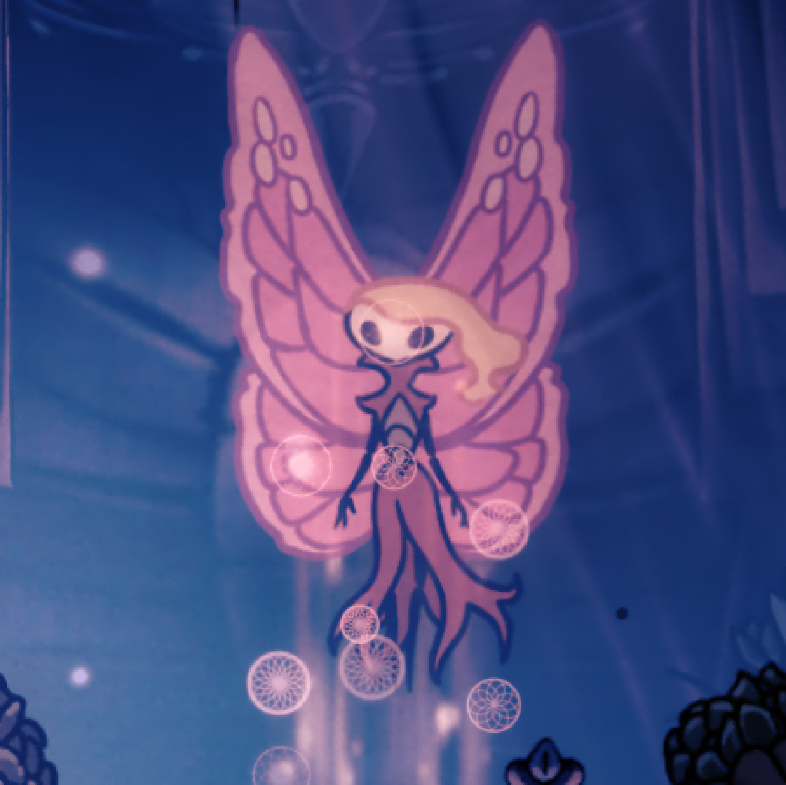
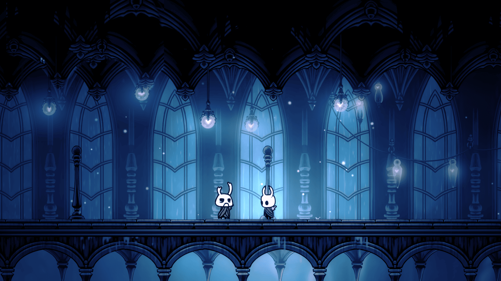

Ciudad de Lágrimas
La Ciudad de las Lágrimas es la antigua capital de Hallownest en Hollow Knight, ubicada en el centro del reino bajo una lluvia constante que filtra desde el Lago Azul. Su nombre original se perdió en la historia y hoy simboliza el duelo y la caída del reino ante la Infección de Destello
Fue el centro político y cultural de Hallownest, con estatuas del Rey Pálido, reliquias reales y estaciones de ciervos como la Estación del Rey y los Almacenes de la Ciudad
El agua proviene del Lago Azul, situado encima de la caverna subterránea, creando una atmósfera melancólica junto a la banda sonora


El Coleccionista
Esta sombra tenebrosa está encerrada en la Torre del Amor.
Conserva a las criaturas de Hallownest en jarras de cristal, aunque está particularmente interesada en las larvas.
Una sombra que se desliza por las cavernas realizando extraños sonidos. Nunca la he visto con claridad, así que no sé qué tipo de criatura es.

Lemm buscador de reliquias
En las antigüedades de este reino se esconde una historia olvidada, aunque pocos parecen dispuestos a descubrirla.
Otros solo vienen a arañar las grietas y ruinas.

Emilicia Eterna
Soy muy conocido entre la clase alta de Hallownest. ...Bueno, lo era... una vez, hasta que esos cretinos me expulsaron.

Forjaguijones
No me gusta mucho estar de chahara, pero si necesitas reparar un aguijón, has acudido al insecto correcto.

Marissa
Antes, multitudes enormes acudían a escucharme cantar, pero algo cambió.
El público, que antes estaba tan absorto, comenzó a marcharse

Musgoso
A veces es difícil detectarlo entre el follaje. Cuando menos te lo esperas aparece a tu lado y carga todo contra ti.
Santuario del Alma
El Santuario del Alma era una institución de investigación dirigida por el Maestro del Alma donde los eruditos trabajaban en la expansión de la mente y el logro de una concentración pura. Cuando la Infección se propagó, buscaron combatirla aprovechando el poder del Alma , la fuerza vital que anima los cuerpos de los insectos.

Casa de los placeres
es una zona de la Ciudad de las Lágrimas que se puede abrir con una Llave Simple .Contiene la única fuente termal de la ciudad y solía ser el emplazamiento del teatro donde la cantante Marissa actuaba para el público. Su espíritu aún puede encontrarse en el escenario.